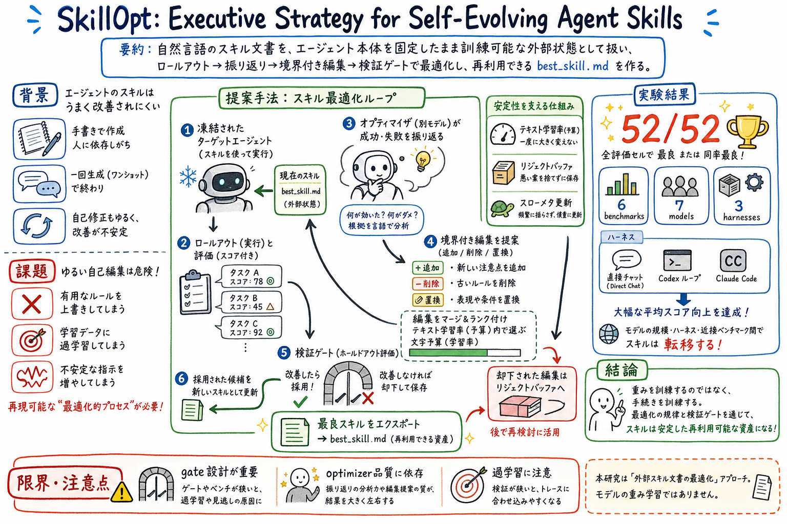

モデル重みを変えず、自然言語の skill document を評価つきで更新する。

どんな論文か
SkillOpt の中心的な発想は、agent skill を「プロンプトに貼る便利メモ」ではなく、凍結した agent の外側にある trainable external state として扱うことにある。モデル重みは変えず、自然言語の skill document を評価つきで少しずつ編集し、次のタスクで再利用できる artifact として育てる。
問題意識はかなり実務寄りである。skill は手書きでも、一回生成でも、ログから雑に追記しても作れる。しかし、どの記述が本当に効いたのか、どの修正が過学習や劣化を招いたのかを見ないまま自己編集すると、便利なはずの skill が壊れたり、特定の失敗ログにだけ過剰適応したりする。
SkillOpt はこの問題を、text-space optimizer として定式化する。target agent が現在の skill でタスクを解き、scored rollout を残す。別の optimizer model が成功と失敗を反省し、skill document に add / delete / replace の bounded edit を提案する。候補 skill は held-out validation で改善した時だけ採用される。
面白いのは、評価対象が direct chat だけではないこと。論文は Codex と Claude Code の agentic loop も含め、6 benchmark、7 target models、3 execution harnesses で検証し、52 の model / benchmark / harness セルすべてで best or tied と報告している。skill 文書を trainable artifact として扱う発想は、wiki、memory、skill、reviewer を運用する実務にかなり近い。
凍結した LLM agent の能力を、モデル重みではなく自然言語 skill document の最適化によって伸ばす論文である。
従来の skill 運用は、手書き、少数例からの生成、自己反省による追記に寄りがちだった。SkillOpt はそこに optimizer discipline を入れ、rollout evidence、bounded edit、validation gate、rejected-edit buffer で skill を育てる。
出力されるものは、追加の推論時 API 呼び出しではなく、最終的な best_skill.md である。つまり deployment 時には通常の agent に skill 文書を渡すだけでよい。
課題と貢献
optimizer は skill 全体を書き換えるのではなく、add / delete / replace の小さな編集を提案する。
訓練 rollouts で良く見える編集でも、検証で改善しなければ採用しない。
Textual learning-rate budget、rejected-edit buffer、epoch-wise slow / meta update で、自然言語 skill の不安定な自己編集を抑える。
Direct chat だけでなく、Codex と Claude Code の agentic loop を含む複数 harness で評価している。
手法のしくみ
1
現在の skill を target agent に渡し、benchmark task を解かせて scored rollouts を集める。
2
optimizer model が成功例と失敗例を読み、skill document のどこを直すべきかを反省する。
3
optimizer は add / delete / replace の bounded edit を複数提案し、編集予算の範囲で candidate skill を作る。
4
candidate skill は held-out validation で評価され、改善が確認された場合だけ best skill として採用される。
5
reject された編集は buffer に残り、同じ失敗を繰り返さないための negative evidence として使われる。
6
最終的には best_skill.md が export され、推論時には追加の optimizer 呼び出しなしで再利用される。
検証結果
論文は、6 benchmark、7 target models、3 execution harnesses で評価している。harness には direct chat、Codex、Claude Code が含まれる。
52 個の model / benchmark / harness セルすべてで、SkillOpt は best または tied-best と報告されている。
GPT-5.5 では、direct chat、Codex loop、Claude Code の各設定で平均改善が報告されている。
optimized skill artifacts は、model scale、execution environment、近い benchmark をまたいで transfer する傾向がある。
推論時に追加の optimizer call を必要としないため、改善後の skill は通常の agent 実行に組み込みやすい。
限界と読みどころ
optimizer model の品質に依存する。悪い反省や編集提案が出ると、validation gate があっても探索効率は落ちる。
validation design が重要である。held-out validation が狭いと、skill がその検証セットへ過適応する可能性がある。
自然言語 skill の編集は可読性と性能が両立するとは限らない。長くなりすぎた skill や局所ルールの蓄積は、別途整理が必要になる。
これはモデル重みの学習ではなく、外部 skill artifact の最適化である。未知の能力を獲得するというより、手続き知を外側で整える手法として読むのがよい。
読みながら見る図表や節
- 読む時は、まず SkillOpt の全体ループを見る。rollout evidence、reflection、bounded edit、validation gate、best_skill.md という流れが中心である。
- 次に安定化の工夫を見る。textual learning-rate budget、rejected-edit buffer、slow / meta update は、自然言語 skill の暴走を抑えるための仕組みである。
- 結果を見る時は、direct chat だけでなく Codex / Claude Code harness を含む点に注目する。これは skill が実際の agent loop に効くかを見るために重要である。
- transfer の結果は、おい丸の skill や wiki 運用にかなり近い。ある環境で育てた手続き知が、別モデルや別 harness でも使えるかという問いにつながる。
次に読むなら
- まず paper-watch の本命として読むなら、method の optimizer loop と validation gate を重点的に見る。
- 次に From Raw Experience to Skill Consumption を読むと、model-generated skills がいつ効き、いつ negative transfer するかの地図が作れる。
- おい丸運用へ引き込むなら、learn-from-logs と empirical-prompt-tuning を、rollout、編集、検証、reject buffer の流れとして見直す。
- 記事化するなら、skill は増やすだけでなく、腐らせず育てる artifact である、という切り口が強い。
読後Q&A
この論文の中心問いは？
agent skill を手書きメモや一回生成の補助ではなく、評価つきで改善できる trainable artifact として扱えるか、という問いである。
SkillOpt はモデルを fine-tuning するの？
しない。target agent のモデル重みは凍結し、外部の自然言語 skill document を最適化する。
何を入力して何を出す？
入力は初期 skill、タスク rollouts、スコア、失敗や成功の証拠。出力は検証で改善が確認された best_skill.md である。
普通の自己反省型 skill 更新と何が違う？
bounded edit、validation gate、rejected-edit buffer、編集予算を持つ点が違う。思いつきで追記するのではなく、optimizer として制御する。
なぜ Codex / Claude Code で評価している点が大事？
skill が単発チャットだけで効いても、実際の agent loop で効くとは限らない。Codex / Claude Code を含めることで、実行ハーネス内の手続き知として効くかを見ている。
おい丸運用にどう効く？
learn-from-logs、skill 更新、wiki ルール更新を、単なる追記ではなく rollout evidence、編集、検証、reject buffer のループとして設計する材料になる。
注意点は？
validation set が狭いと skill が過適応する可能性がある。また、性能改善だけを追うと skill 文書が長く複雑になり、運用上の可読性が落ちる。
次に読むなら何？
From Raw Experience to Skill Consumption とセットで読むのがよい。SkillOpt が最適化手法なら、そちらは skill lifecycle と negative transfer の地図になる。